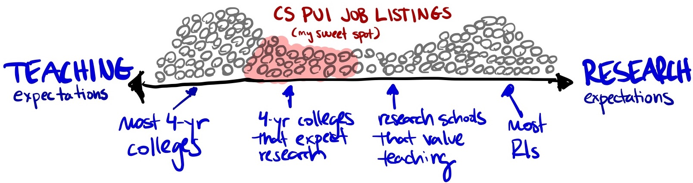

Despite their research-intensive PhDs, many graduates find academic happiness with primarily-undergraduate institutions because of the compelling balance they offer between teaching and research. But the pathways to these positions is often not clear (how do I find these jobs?), and often requires insider knowledge of a landscape that is invisible to PhD students. This listing is meant to help navigate that muddy water. See archived listings from previous years.
This document does not contain most CS faculty positions. It’s specifically intended for people who want to invest in teaching/mentorship with undergraduate students while still staying active in their scholarship. See our Resources page for insight into the ways in which PUIs might differ in their interviewing processes and values.
üì£ If you would like to add your position, please visit the Post an Ad page for logistical details or the FAQ for more info about this site (it‚Äôs free!).
Criteria For Job Postings
The positions on this page should be…
- accessible to those with a Ph.D. in CS (or a closely related field)
- permanent positions (mostly likely tenure-track) why?
- universities that identify as primarily-undergraduate institutions why?
- institutions that highly value teaching, but also secure time and financial resources for faculty to remain engaged with research. what does this mean?
Searches This Year
Currently Active Searches
The following searches are currently active and are definitely accepting applications.
| Institution | Job Type | Location | Deadline |
|---|---|---|---|
| Furman University – Data Science | Tenure Track | Greenville, SC. USA | 2025-09-01 |
| Furman University – Any Specialization | Tenure Track | Greenville, SC. USA | 2025-09-01 |
| Loyola University Maryland | Tenure Track | Baltimore, MD. USA | 2025-09-07 |
| Mount Holyoke College – Data Science | Tenure Track | South Hadley, MA. USA | 2025-09-25 |
| Skidmore College | Tenure Track | Saratoga Springs, NY. USA | 2025-10-01 |
| Williams College | Tenure Track | Williamstown, MA. USA | 2025-10-01 |
| Grinnell College | Tenure Track | Grinnell, IA. USA | 2025-10-03 |
| College of the Holy Cross | Tenure Track | Worcester, MA. USA | 2025-10-07 |
| Barnard College | Tenure Track | New York, NY. USA | 2025-10-08 |
| Oberlin College | Tenure Track | Oberlin, OH. USA | 2025-10-15 |
| St. Olaf College | Tenure Track | Northfield, MN. USA | 2025-10-17 |
| Hope College | Tenure Track | Holland, MI. USA | 2025-11-01 |
Due Date Past
The following searches have deadlines which are nominally past. However, deadlines are treated very differently between institutions. Read carefully. For example, we strongly encourage you to email search chairs if you’re interested in positions that appear to have passed - they might still be open!
| Institution | Job Type | Location | Deadline |
|---|---|---|---|
| St. Bonaventure University | Tenure Track | St. Bonaventure, NY. USA | 2025-07-31 |
Position Descriptions
Below are the position descriptions for all of this year’s searches which are not confirmed to be closed.
St. Bonaventure University (Tenure Track)
The Department of Computer Science at St. Bonaventure University invites applications for a tenure-track Assistant Professor to begin in either January or August of 2026. Current department research interests include AI & religion, collaborative data systems for social impact, natural language processing, and cybersecurity.
üóìÔ∏è Review of applications will begin on July 31, 2025, and will continue until the position is filled.
üåé St. Bonaventure, NY. USA
Furman University – Data Science (Tenure Track)
The Department of Computer Science at Furman University invites applications for two tenure track positions at the Assistant, Associate, or Full Professor rank to begin August 1, 2026. We are specifically seeking at least one candidate with expertise in data science, including machine learning, data visualization, and statistical modeling, who can develop and teach courses in our expanding data science curriculum while mentoring undergraduate research in this growing field.
üóìÔ∏è Review of applications will commence on September 1, 2025 and will continue until the position is filled.
üåé Greenville, SC. USA
Furman University – Any Specialization (Tenure Track)
The Department of Computer Science at Furman University invites applications for two tenure track positions at the Assistant, Associate, or Full Professor rank to begin August 1, 2026. Candidates in all areas of specialization will be considered for the second position.
üóìÔ∏è Review of applications will commence on September 1, 2025 and will continue until the position is filled.
üåé Greenville, SC. USA
Loyola University Maryland (Tenure Track)
Loyola University Maryland is hiring a tenure-track assistant professor in computer science to start in fall 2026. Candidates must have a Ph.D. in Computer Science or a closely related field.
Loyola is a liberal arts university with about 5000 undergraduates. Our major has been graduating between 25-30 students each year, and individual course sizes are capped at 20-24. We have a good mix of teaching and research expectations, with a 3/3 teaching load, startup, etc. We run two CS undergraduate degrees, and are heavily involved in interdisciplinary data science undergraduate and MS programs that have been established for 10 years. See more information about our department and the application requirements in our full job posting.
üóìÔ∏è Priority consideration deadline for applications is September 7, 2025.
üåé Baltimore, MD. USA
Mount Holyoke College – Data Science (Tenure Track)
Mount Holyoke College invites applications for a tenure track position in Data Science at the Assistant Professor level beginning July 1, 2026. We welcome applications from researchers with expertise across the breadth of data science with no limitations on the array of academic fields in which they conduct their scholarship. Successful applicants will be well-qualified to teach at all levels, including an introductory data science course and a project-based capstone course, as well as courses in their area of expertise. We are particularly interested in candidates with enthusiasm for engaging in the development of a data science curriculum and enriching data science collaborations on campus. Applicants should have a strong commitment to research, as well as teaching and mentoring students who are broadly diverse with regard to race, ethnicity, socioeconomic status, gender, nationality, sexual orientation, disability, and religion. A research program that can easily accommodate and encourage undergraduates is crucial. The teaching load at Mount Holyoke College is 2/2.
üóìÔ∏è Applications submitted by September 25, 2025 will be assured of full consideration.
üåé South Hadley, MA. USA
Skidmore College (Tenure Track)
The Computer Science Department at Skidmore College invites applications for a tenure-track Assistant Professor position beginning in Fall 2026. With this appointment the department aims to widen or strengthen our areas of Computer Science expertise. Current areas of expertise in the department include artificial intelligence, the theory of computation, algorithms, databases, computer vision, networks, human-computer interaction, data science, and software engineering.
üóìÔ∏è Review of applications begins October 1, 2025 and continues until the position is filled.
üåé Saratoga Springs, NY. USA
Williams College (Tenure Track)
The Department of Computer Science at Williams College invites applications for two tenure-track faculty positions, one at the assistant professor level and one open-rank, beginning July 1, 2026. The Assistant Professor position is a tenure-track position. The rank and initial term of the open-rank position will be determined by the qualifications of the successful candidate. We welcome candidates from all backgrounds and areas of computer science who can contribute to the vibrancy of our academic community through their research, teaching, and service for both positions.
üóìÔ∏è Completed applications received by October 1, 2025 will receive full consideration, and review of applications will continue until the position is filled.
üåé Williamstown, MA. USA
Grinnell College (Tenure Track)
The Department of Computer Science invites applications for a tenure-track appointment beginning Fall 2026. Assistant Professor (Ph.D.) preferred; Instructor (ABD) or Associate Professor possible. We seek candidates with an interest in teaching courses in systems or software design and development, and research involving any area of computer science. Candidates with degrees in closely related fields will also be considered. Candidates are expected to describe the ways they can support and engage with students and colleagues from historically underrepresented or marginalized groups. The teaching load is five courses (or equivalent; some classes with a significant lab component are credited as 1.5 courses) over two semesters; periodically one course will be Tutorial (a topical writing/critical thinking course for first-year students). Additional information about our curriculum and faculty can be found at https://www.cs.grinnell.edu.
üóìÔ∏è We will begin reviewing applications on October 3, 2025 and will continue until the positions are filled.
üåé Grinnell, IA. USA
College of the Holy Cross (Tenure Track)
The Computer Science Program at the College of the Holy Cross invites applications for two full-time tenure-track Assistant Professor positions to begin in August 2026. All research specialties will be considered. Priority will be given to candidates whose research expertise and teaching interests are in computer systems, consider ethical or social issues in computing and technology, or any other area that complements the research expertise of the current computer science faculty. Candidates whose research area considers ethical or social issues in computing and technology will be considered for the Barrett Assistant Professorship in Computer Science.
üóìÔ∏è For full consideration, please apply by October 7, 2025.
üåé Worcester, MA. USA
Barnard College (Tenure Track)
Barnard College invites applications for a tenure-track assistant professor in Computer Science to start July 1, 2026. Barnard faculty are expected to engage in teaching, research, curriculum and program development, undergraduate advising, and mentoring of undergraduate research. The successful hire will further the aims and vision of Barnard’s CS program and will embody strategic strengths for this growing program. There is opportunity to collaborate with faculty and students at both Barnard and Columbia. We are seeking candidates who work in the following areas: Artificial Intelligence, including but not limited to Machine Learning, Responsible AI, and Computer Vision; Theoretical Computer Science, including Algorithms, Algorithmic Fairness, Game Theory, and Learning Theory; Systems and Networking, including Databases and Mobile Applications; and Data Science. Within those areas, we encourage candidates who take a broad approach to computing—including “computing for good,” connections across multiple subareas of computer science, and research connections to another discipline. Candidates must have a PhD in Computer Science or a related discipline, and should have a promising research agenda and record of scholarship, as well as a demonstrated commitment to undergraduate teaching, mentoring, and increasing participation in computer science. Applications received by October 8, 2025 will receive full consideration. Review of applications will continue until the positions are filled.
üóìÔ∏è Review of applications will begin on October 8, 2025, and will continue until the position is filled.
üåé New York, NY. USA
Oberlin College (Tenure Track)
The Computer Science Department at Oberlin College invites applications for a full-time tenure track faculty position in the College of Arts and Sciences in Artificial Intelligence and Machine Learning. Initial appointment to this position will be for a term of four years beginning Fall of 2026, with an additional three years upon reappointment, and will carry the rank of Assistant Professor. … Faculty members teach at all levels of the curriculum, and are active in original research that provides opportunities for undergraduate participation. Many of our majors go on to earn advanced degrees for leading CS graduate programs. Our majors are enthusiastic and actively engaged in their education. The Oberlin Computer Science department is dedicated to making CS accessible to all students, and uses active learning and other evidence-based pedagogies throughout our curriculum. The incumbent will teach the standard teaching load (4.5 courses per year with labs counting towards the total) at all levels of undergraduate Computer Science. This will include junior/senior-level elective courses in Artificial Intelligence and Machine Learning.
üóìÔ∏è Review of applications will begin on October 15, 2025, and will continue until the position is filled. Completed applications received by the October 15th deadline will be guaranteed full consideration.
üåé Oberlin, OH. USA
St. Olaf College (Tenure Track)
The Department of Mathematics, Statistics, and Computer Science (MSCS) at St. Olaf College invites applications for a full-time, tenure track position in Computer Science at the Assistant Professor level, to begin August 2026. We are looking for candidates with a PhD in Computer Science or a closely related field, and who can contribute broadly to our growing computer science program through teaching, research, and supervision of undergraduate research.
üóìÔ∏è Review of applications will begin on October 17, 2025, and will continue until the position is filled.
üåé Northfield, MN. USA
Hope College (Tenure Track)
Hope College’s Department of Computer Science seeks a full-time, tenure-track Assistant Professor starting Fall 2026 (higher ranks considered). We welcome applicants from all areas, with preference for those whose interests broaden and complement departmental strengths. As a Christian liberal arts college, Hope integrates faith and scholarship in a vibrant, inclusive academic community, offering a 3-3 teaching load, small class sizes, and strong support for research with undergraduates. Located in Holland, Michigan, just minutes from Lake Michigan, Hope provides a family-friendly environment and proximity to major cities.
üóìÔ∏è Review of applications will begin on November 1, 2025, and will continue until the position is filled.
üåé Holland, MI. USA